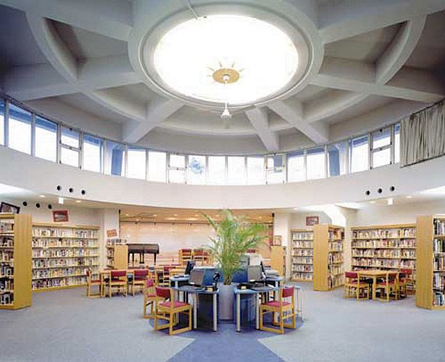

나고야 인터내셔널 스쿨 도서관 · 사진: Nis1964 / Wikimedia Commons, CC BY-SA 4.0
나고야 인터내셔널 스쿨(Nagoya International School, NIS) — 일본에 살면서 일본 대학도 열어 두려면
1. 어떤 학교인가
나고야 인터내셔널 스쿨은 1964년에 문을 연 것으로 알려진 사립 공학 국제학교입니다. 위치는 나고야시 모리야마구 나카시다미 일대이고, 유아 과정부터 G12까지 한 학교에서 이어집니다. 수업은 영어로 이루어집니다.
교육과정은 IB 세 과정을 모두 갖춘 구조로 소개됩니다.
· PYP(초등) — 유아 과정부터 G5 무렵까지
· MYP(중등) — G6부터 G10 무렵까지
· DP(고등) — G11·G12
· 졸업 시에는 학교 자체 졸업장을 받는 길과 IB 디플로마를 함께 이수하는 길이 안내됩니다.
인증 쪽도 오래되었습니다. WASC는 1976년부터, CIS는 2012년부터 인증을 받은 것으로 소개되고, 일본 국제학교 협의체인 JCIS 회원이기도 합니다. 이 인증 이야기가 뒤에서 중요해집니다.
※ 학생 수·학비·연도별 시험 결과처럼 해마다 달라지는 수치는 이 글에 적지 않았습니다. 모집 학년과 조건도 해마다 바뀌니 학교 입학처에 직접 확인하세요.
2. 이 글의 핵심 — 인증 한 줄이 졸업 뒤의 길을 바꿉니다
일본에 사는 주재원 가정에서 가장 자주 받는 질문이 이것입니다. "국제학교를 보내면 일본 대학은 포기해야 하나요?"
먼저 전제를 정확히 해야 합니다. 일본에 있는 국제학교는 일본 학교 제도 안의 학교가 아닙니다. 그래서 졸업한다고 해서 일본 고등학교 졸업자와 같은 자격이 자동으로 따라오지는 않습니다. 여기까지는 많은 분이 아십니다.
그런데 그다음이 덜 알려져 있습니다. WASC·CIS·ACSI 같은 국제 인증을 받은 일부 학교의 졸업생은 일본 대학 지원 자격을 인정받을 수 있는 것으로 안내되고 있고, 나고야 인터내셔널 스쿨도 그에 해당하는 학교로 소개됩니다. 즉 인증이라는 한 줄이 "일본 대학도 선택지에 둘 수 있는가"를 가릅니다.
| 오해 | 실제로 확인해야 하는 것 |
|---|---|
| "국제학교 = 일본 대학 불가" | 인증을 받은 학교라면 지원 자격이 인정될 수 있다고 안내됩니다 |
| "인증이 있으니 그냥 되겠지" | 대학마다 요강이 다릅니다. 자동으로 되는 것이 아닙니다 |
| "고3 때 알아보면 된다" | 요구 서류·전형이 달라 고등 진학 전에 확인해 두어야 합니다 |
| "일본 대학을 보려면 EJU부터" | 전형에 따라 다릅니다. 영어 전형·국제 전형을 따로 운영하는 대학도 있습니다 |
정리하면 이렇습니다. 인증은 문을 열어 줄 수 있지만, 합격을 보장하지 않고 자동 자격도 아닙니다. 일본 대학도 염두에 두신다면 아이가 고등에 올라가기 전에 학교 진학 담당 선생님과 한 번 이야기해 두시고, 지원할 대학의 그해 모집요강을 직접 확인하시기 바랍니다. 일본 쪽 시험 준비는 일본 JLPT·EJU 안내도 함께 보시면 도움이 됩니다.
3. 한국(주재원) 학생이 겪는 어려움 — 구간이 바뀔 때 흔들립니다
IB 전 과정 학교의 장점은 끊김 없이 이어진다는 것입니다. 그런데 학부모 입장에서는 구간마다 성적이 보이는 방식이 달라 당황하시는 일이 생깁니다.
| 구간 | 공부 방식 | 가정에서 자주 겪는 일 |
|---|---|---|
| PYP(초등) | 탐구 단원 중심, 발표·전시가 많음 | 진도가 눈에 안 보여 잘하는지 판단이 어렵습니다 |
| MYP(중등) | 기준표(criteria)로 채점, 과목마다 기준이 다름 | 답은 맞는데 설명이 부족해 점수가 깎입니다 |
| DP(고등 2년) | 과제 기한과 시험이 동시에 굴러감 | 시간 관리에서 먼저 무너집니다 |
한국에서 오신 가정이 가장 자주 겪는 순서가 이렇습니다. 초등에서는 "잘 적응했다"고 안심하다가, 중등에 올라가서 처음 성적이 흔들립니다. 영어 회화는 늘었는데 학습 영어(교과 어휘·근거를 들어 설명하는 글쓰기)가 그만큼 따라오지 않았기 때문입니다. 수학도 계산은 되는데 풀이 과정을 영어로 적는 부분에서 점수를 잃습니다. 기준표 채점이 어떻게 돌아가는지는 형성평가·총괄평가 정리에서 더 자세히 보실 수 있습니다.
4. 그래서 이렇게 준비합니다
· ① 중등에 올라가는 해를 먼저 적어 두세요. NIS 구조에서는 G6이 분기점입니다. 그 전 1년이 가장 효율이 좋습니다.
· ② 영어는 회화가 아니라 "쓰기"부터 봅니다. 교과 지시어(describe·explain·evaluate)를 구분해 쓰는 연습, 근거를 문단으로 묶는 연습이 먼저입니다. → 리딩 레벨 읽는 법
· ③ 수학은 서술을 영어로 옮기는 데 시간을 씁니다. 답이 아니라 과정이 채점 대상입니다.
· ④ 고등 2년(DP)은 과목 조합을 1년 전에 상의합니다. HL 선택이 대학 지원 조건과 바로 연결됩니다. → IB DP 점수 완전정복
· ⑤ 일본 대학도 볼 생각이라면 고등 진학 전에 진학 담당 선생님과 한 번 이야기해 두세요. 뒤로 미룰수록 선택지가 줄어듭니다.
📌 나고야는 한국과 시차가 없습니다. 그래서 한국 선생님과의 화상 수업이 저녁 시간에 그대로 들어갑니다. 도쿄·오사카와 마찬가지로, 현지에 한국어로 설명해 줄 수 있는 과목 선생님을 찾기 어려운 지역일수록 화상 수업의 쓸모가 큽니다.
5. 나고야라는 도시 — 선택지가 적다는 조건에서 계획 세우기
도쿄는 학교를 비교해서 고르고, 간사이는 그다음입니다. 나고야는 "비교"보다 "확보"가 먼저인 지역입니다. 그래서 순서를 이렇게 잡으시길 권합니다.
· 발령이 확정되기 전이라도 학교 입학처에 연락해 해당 학년의 지원 시기와 대기 상황을 물어보세요.
· 통학 버스 노선을 먼저 받고 그 범위 안에서 집을 보세요. 선택지가 하나에 가까울수록 집을 학교에 맞춰야 합니다. → 통학·스쿨버스
· 형제가 있다면 학년별 자리를 각각 확인하세요. 한 아이만 되는 상황이 실제로 생깁니다.
· 재등록 시기도 미리 알아 두세요. 다음 학년 자리는 보통 겨울에 정해집니다. → 재등록(Re-enrollment)
일본 안 다른 도시와 견주어 보실 분들을 위해 덧붙이면, 도쿄에는 ASIJ·아오바 재팬 같은 학교가, 간사이에는 오사카 인터내셔널 스쿨과 캐나디안 아카데미(고베)가 있습니다. 일본 전체 지도는 일본 국제학교 안내에서 보실 수 있습니다.
관련 검색어: 나고야국제학교 · 나고야국제학교수학과외 · 나고야국제학교영어과외 · 나고야인터내셔널스쿨과외 · 나고야주재원과외
정리
나고야 인터내셔널 스쿨은 1964년 개교로 알려진 주부 지역의 IB 전 과정 학교입니다. 이 지역은 선택지가 적어 "자리 확보"가 먼저이고, 그다음 질문이 "졸업 뒤에 어떤 길이 열리는가"입니다. WASC·CIS 인증 덕분에 일본 대학 지원 자격이 인정될 수 있다고 안내되지만 자동은 아니고 대학마다 요강이 다릅니다. 아이 쪽에서는 G6(중등 진입)이 가장 흔들리는 지점이니 그 전 1년에 영어 글쓰기와 수학 서술을 손봐 두시는 편이 좋습니다. 지금 학년에서 무엇이 부족한지 모르겠다면 30분 무료 수업으로 현재 상태를 먼저 점검해 보시기 바랍니다. (학년 구성·모집 조건·인증 현황은 바뀔 수 있으니 반드시 학교 요강을 직접 확인하세요.)